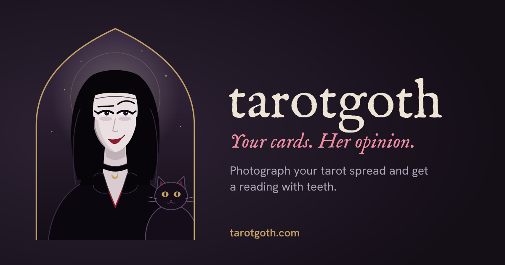
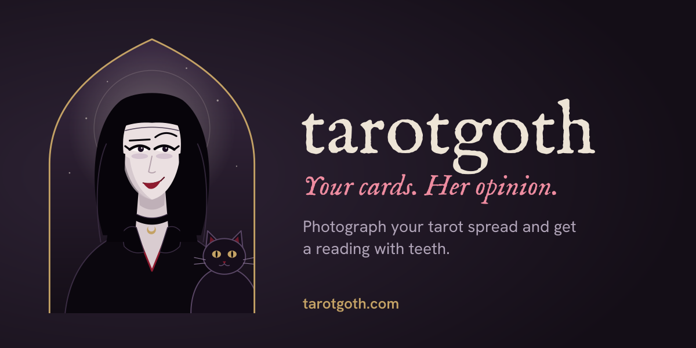

Three cards, zero good news. You came to the right place.
Five of Cups
PastThree cups spilled, two still standing, and you are staring at the spilled ones. Classic. Your past is a funeral you keep attending, and nobody remembers inviting you.
The Moon
PresentNothing is what it looks like, least of all your own motives. You are making decisions in the dark and calling it intuition.
The Tower, reversed
FutureThe collapse is coming and you are working hard to postpone it. Impressive effort, wrong direction. Delaying a disaster only lets it collect interest.
Wear black. You already do.
Metadata and social images
Built from the same tokens, avatar and fonts as the app. Regenerate with
npm run build:social.
og-image.png, 1200 by 630 (1.91:1). Used by Facebook, LinkedIn, WhatsApp, iMessage, Slack, Discord.
twitter-card.png, 1200 by 600 (2:1) forsummary_large_image. Key content stays 60px inside every edge so crops do not cut it.